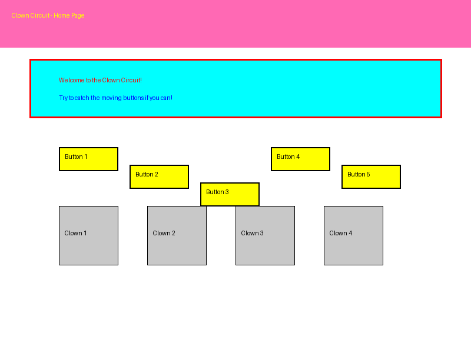
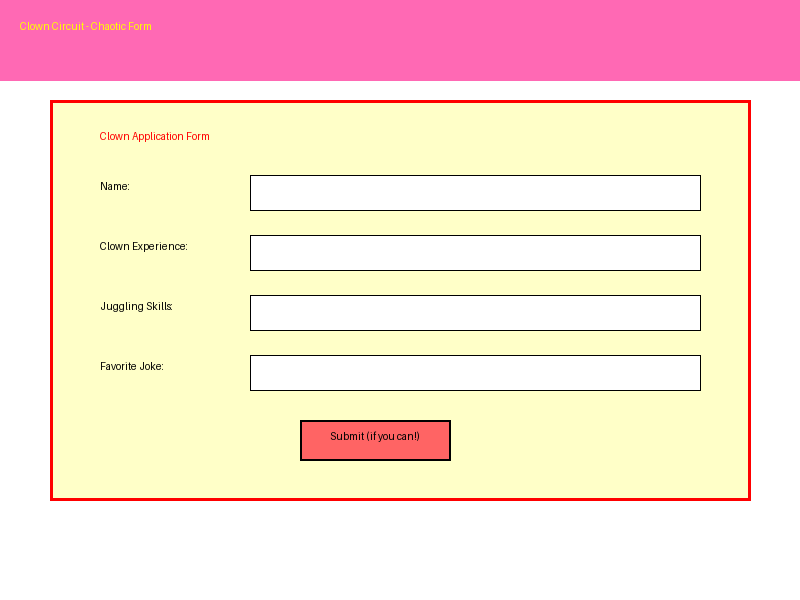
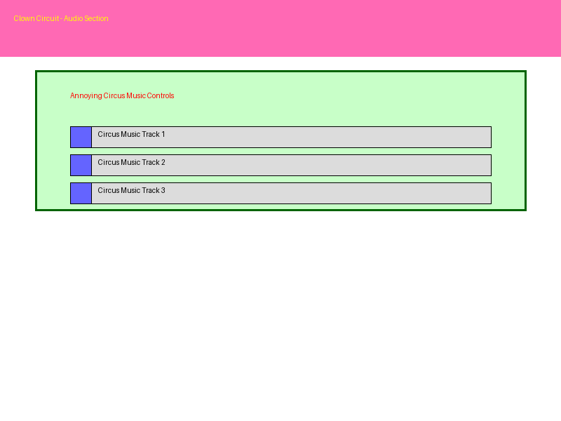

A Silly UI Challenge Project
Clown Circuit is a deliberately absurd and frustrating web interface designed to showcase anti-patterns in UI/UX design. It serves as a humorous example of what NOT to do when creating user interfaces, while demonstrating various chaotic design elements and interactions.
The project was created as part of the "Silly UI Challenge" to explore the boundaries of user interface design by intentionally breaking conventional rules and best practices.
The main interface featuring chaotic layout and moving elements.
A form section with unpredictable behavior and confusing inputs.
Audio elements that play annoying circus music with increasing volume.
Buttons that move away when users hover over them, creating frustration and making simple tasks difficult. This demonstrates how unpredictable UI elements can severely impact usability.
Inconsistent spacing, alignment, and visual hierarchy that makes it hard to understand the page structure. This highlights the importance of grid systems and consistent layouts in real designs.
Bright, clashing colors that strain the eyes and create visual confusion. This demonstrates why color theory and thoughtful palette selection matter in professional UI design.
Sound effects and music that play automatically and increase in volume over time. This showcases why respecting user control over media is essential for a positive experience.
Content that continuously loads, making it impossible to reach the bottom of the page. This illustrates the importance of providing users with a sense of progress and completion.
Form elements that behave unpredictably, transform user input, or provide misleading feedback. This demonstrates why clear, consistent form design is crucial for usability.
The project uses vanilla HTML, CSS, and JavaScript to create an intentionally frustrating user experience:
{kind=link}
{kind=link}
{kind=link}